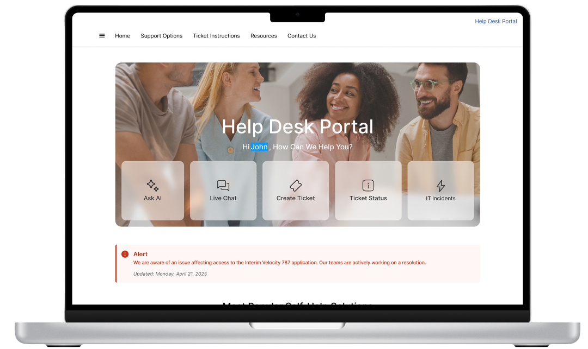
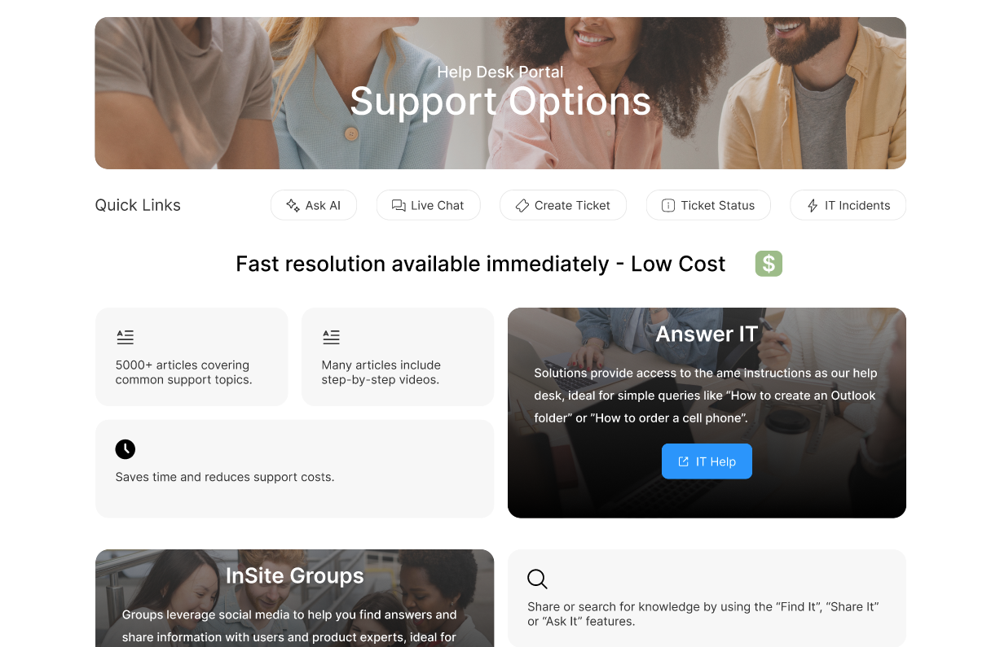
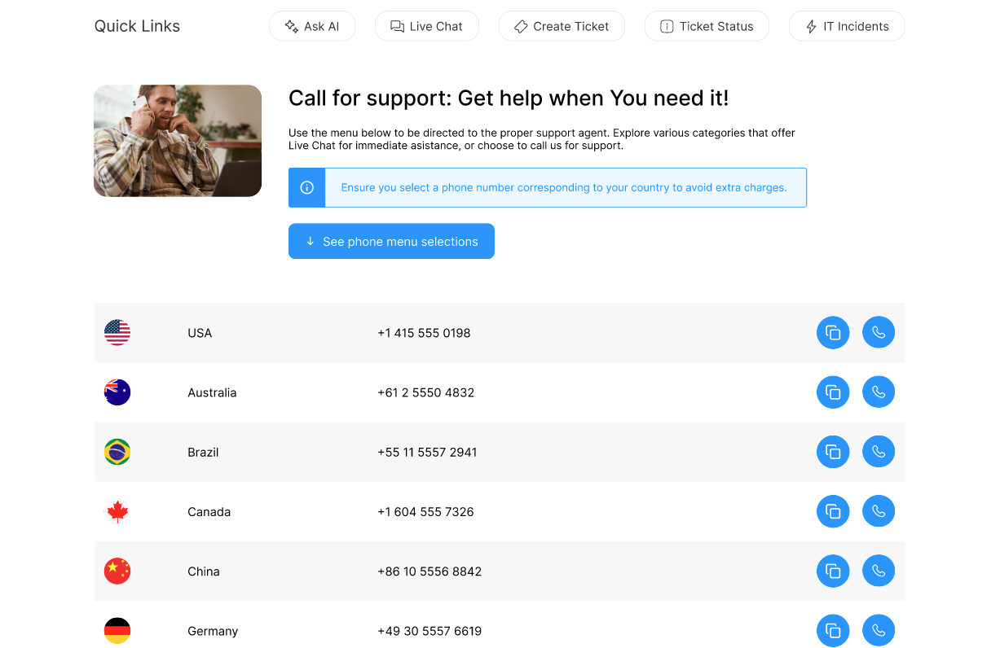
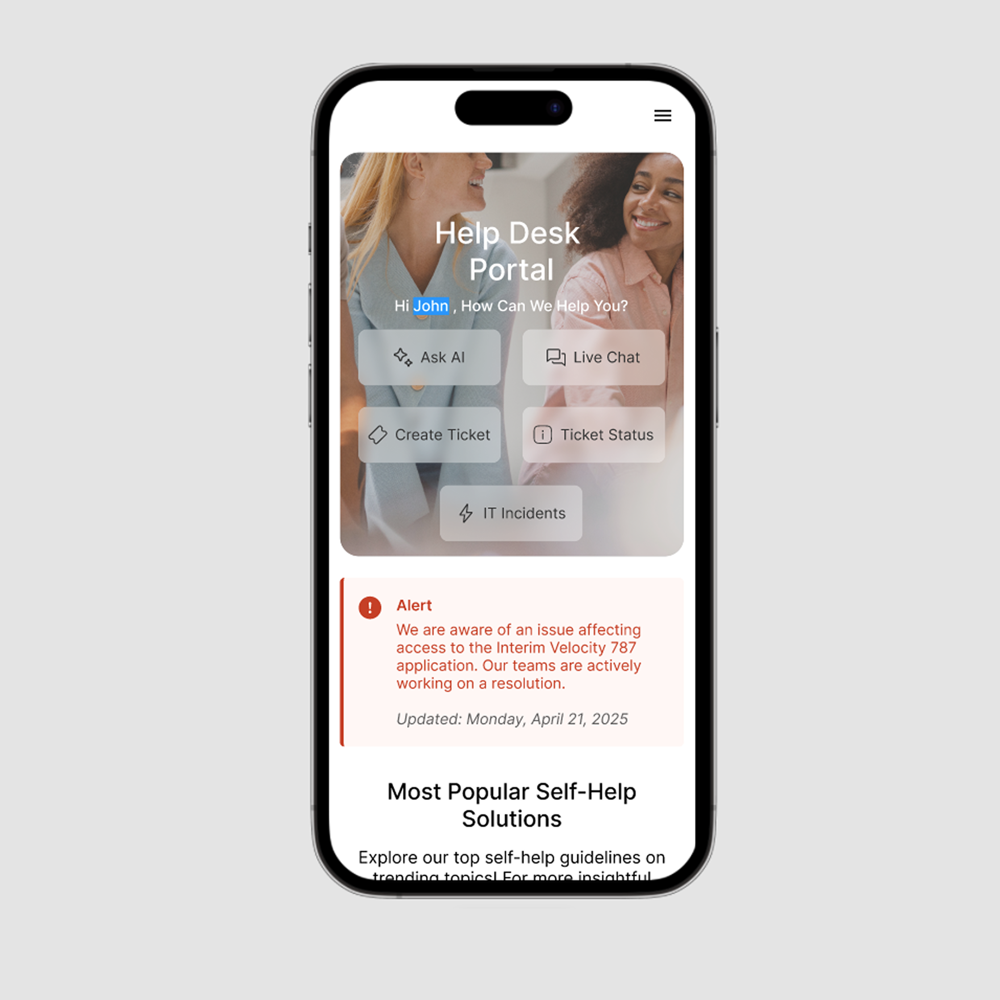

A concept redesign of an internal support platform focused on improving access to technical help, documentation, and support channels within a complex enterprise environment.

The project was based on an existing internal support system that required migration to a new platform and significant UX improvements. The goal was to redesign the structure and interface to support high daily usage, diverse content types, and multiple support flows.
I was responsible for UX design, information architecture, and interface design. I worked closely with developers to understand platform constraints and ensure the design aligned with backend capabilities and system limitations.
The project started with a UX/UI assessment of the existing system, followed by collaboration with multiple teams to identify limitations, opportunities, and required features. Based on this input, I designed a clear information architecture and interface structure, iterating on layouts and components to balance usability, consistency, and technical feasibility.


The final design provides a clear entry point to support options, structured navigation, and consistent UI patterns, making it easier for users to quickly find help or escalate issues.

The resulting design demonstrates how complex, system-driven requirements can be translated into a clear and usable interface. The project highlights my ability to work at the intersection of UX, frontend design, and technical constraints.
For work inquiries or collaboration, feel free to contact me via email (dluzniewska.b@gmail.com) or social media.